Yorben Geerinck
Fotograaf in vrije tijd
This is my website, made by hand and from the heart, relying on my skills and creativity. On here I will upload my favourite photographs of different events. Just because I want to. Enjoy! ;)
La Mia Galleria
Zoo Antwerpen: 10/08/2025
Wild Nature
Zoo Castle Garden
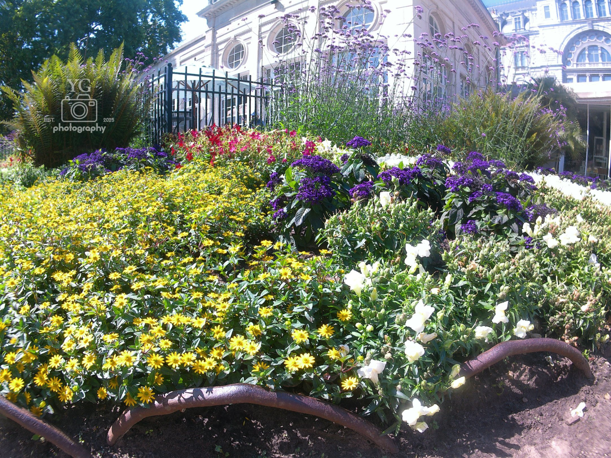
Flowers
Butterfly
Butterfly V2
Wild Nature V2
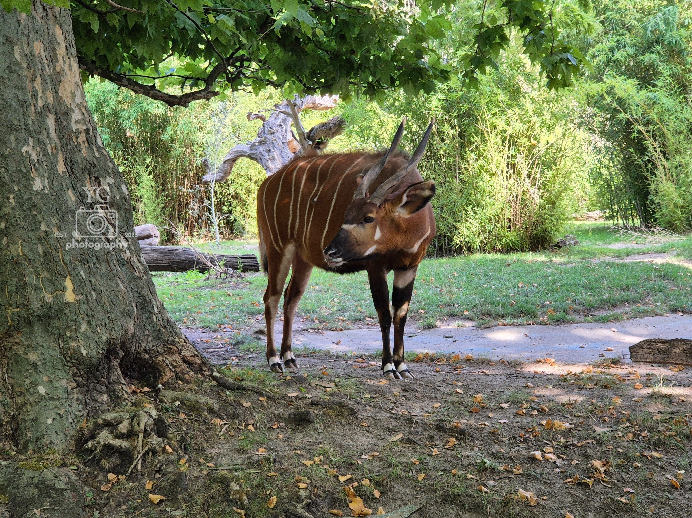
Hiding Okapi
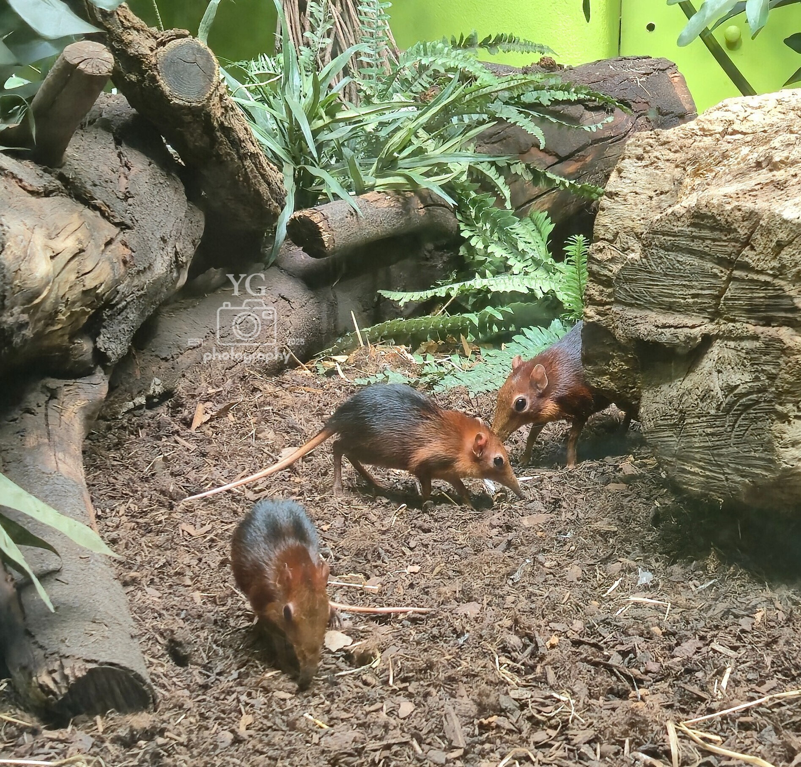
Slurfhondjes
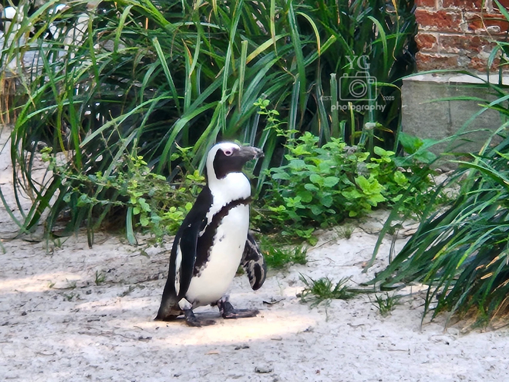
Proud Penguin
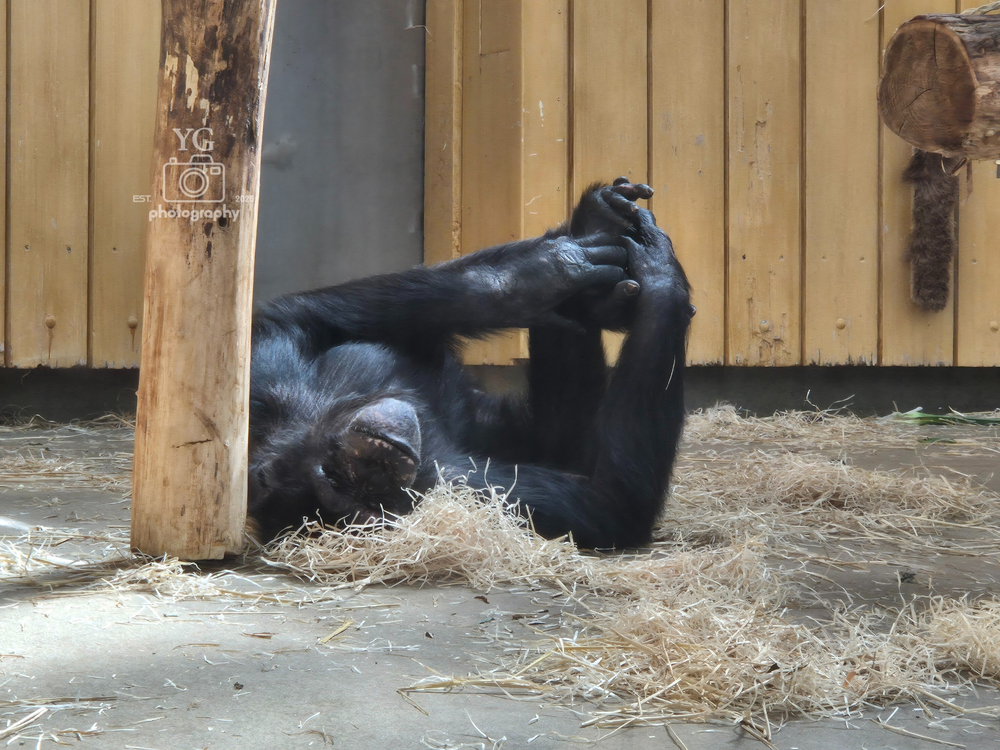
Relaxed Monkey
Lost Duck
Sightseeing
Los Elefantos
Hungry Fish
Crocs
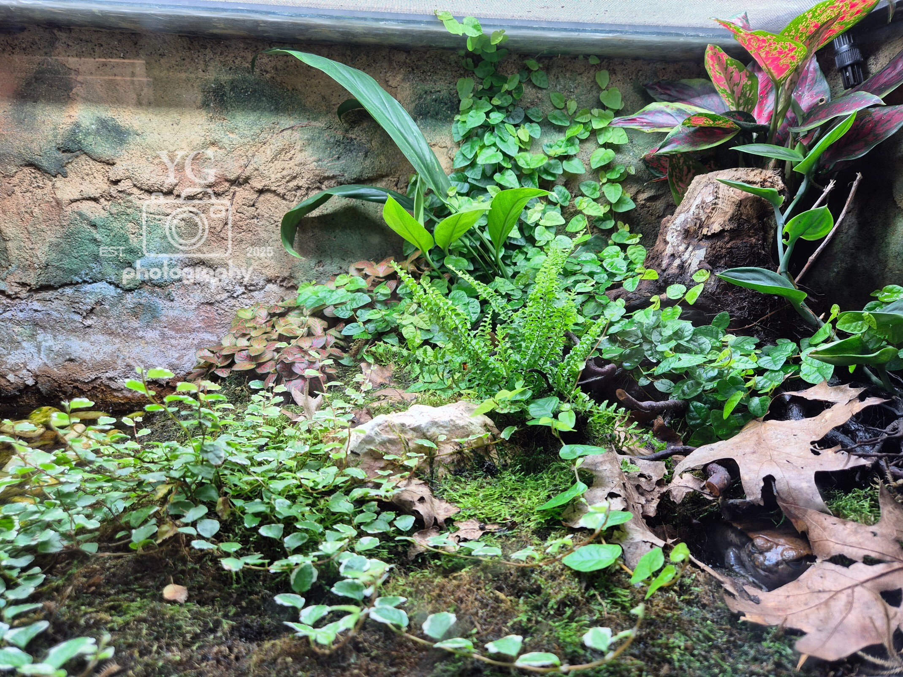
Spot The Frog
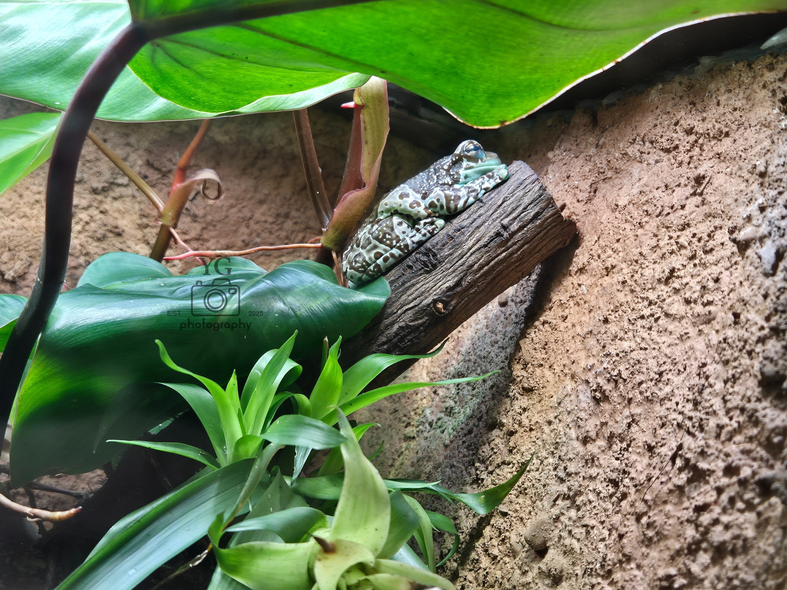
Blue Poisonous Froggie
Yellow Sleepy Froggie
Upside Down World Lizzard
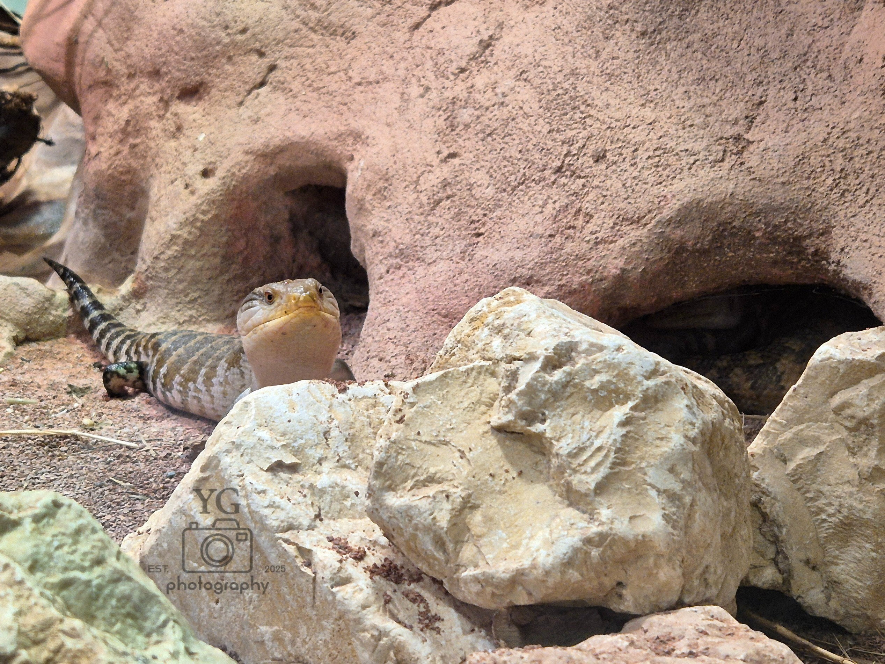
Hi Lizzard
Drama Queen Lizzard
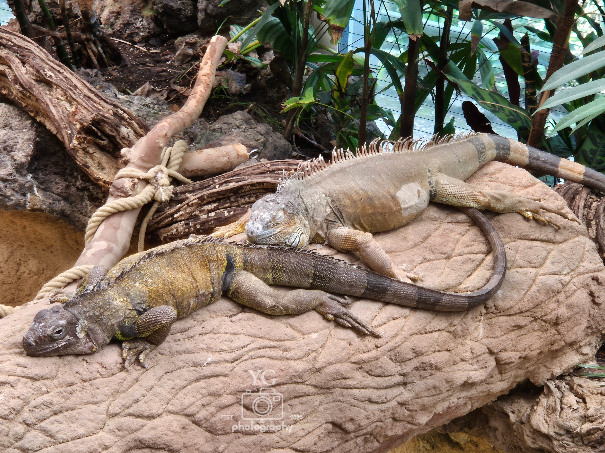
Sleepy Dromedari
Exotic Birdie
Toothbrush Goat
Wild Nature (Experimental)
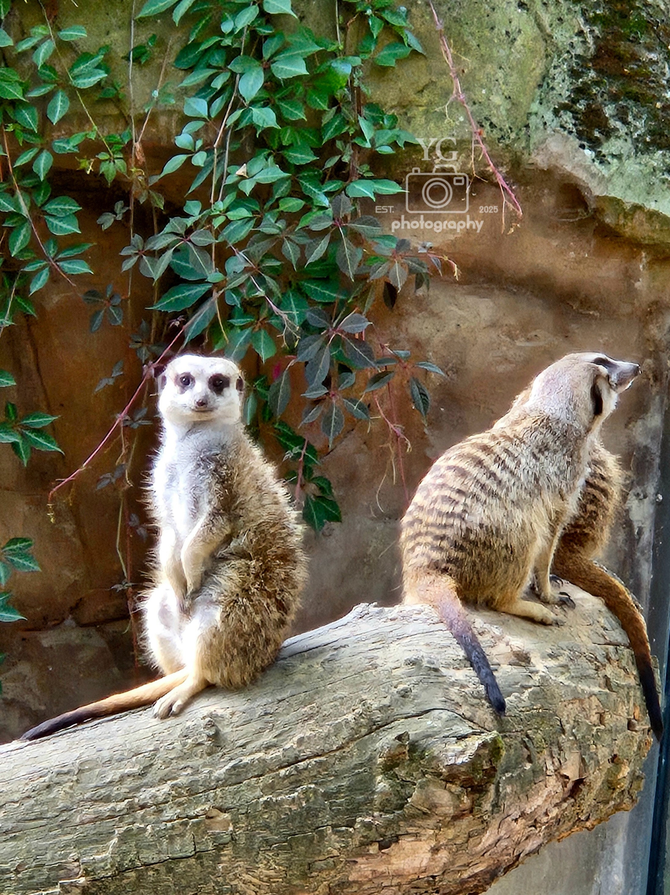
Attentive Meerkat

Beautifull Bongo
Center Parcs De Kempervennen: 04/08/2025-08/08/2025
Kitty Kat
Rocky
Kitty V2
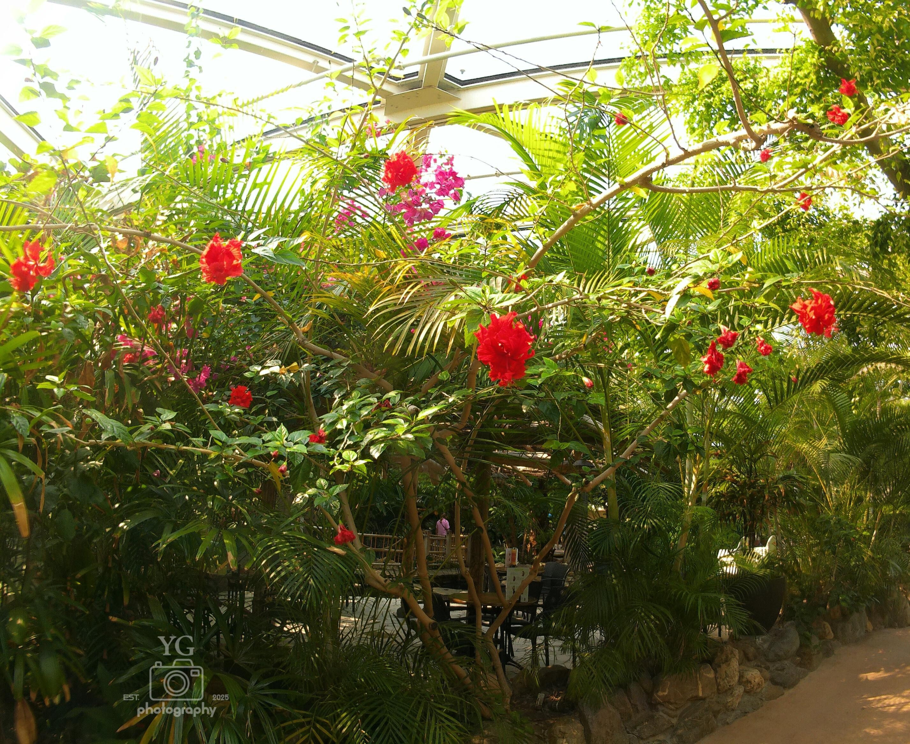
Wild Nature
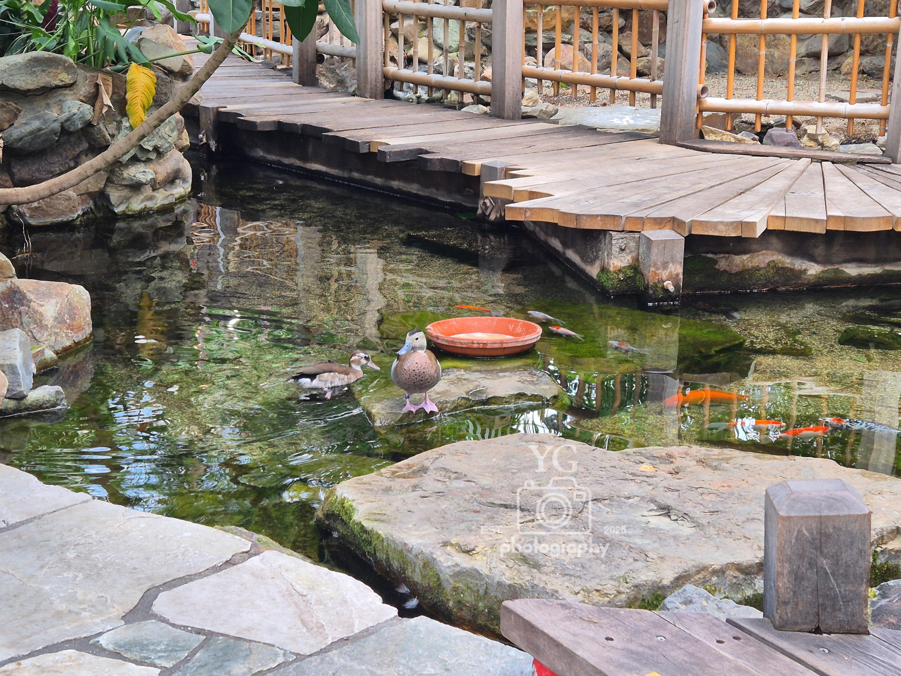
Quack Me A River
Contact
Neem contact op via e-mail door op deze link te klikken: geerinckyorben@gmail.com